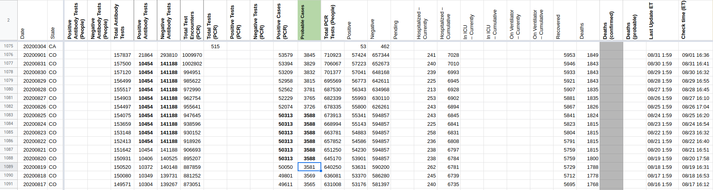
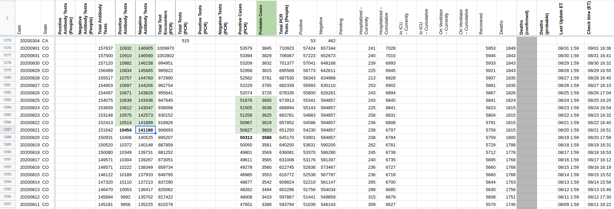

[CO] Fill frozen values for probable+confirmed cases after state changed dashboards
Issue number 797
space-buzzer opened this issue on August 27, 2020 at 8:50 pm
Labels Data quality Historical Data Backfill
The data is available in files here: https://drive.google.com/drive/folders/1bBAC7H-pdEDgPxRuU_eR36ghzc0HWNf1
space-buzzer added the label Data quality on August 27, 2020 at 8:50 pm
space-buzzer added the label Backfill on August 28, 2020 at 10:02 am
space-buzzer added the label Historical Data on August 28, 2020 at 10:02 am
space-buzzer closed the issue on September 2, 2020 at 11:44 am
Filled the data from COs archive folder for the relevant days Confirmed, Positive cases and Antibody negative and positive tests
 